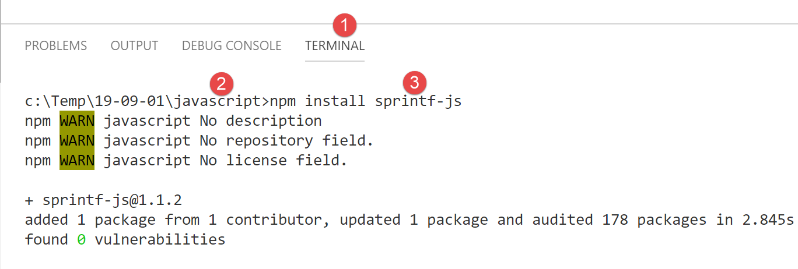

6. Strings
JavaScript strings are very similar to those in PHP.

6.1. script [str-01]
The first thing to understand is that once a string is created, it can no longer be modified. There are many methods available to create a new string from the original string, but the original string remains unchanged. Furthermore, a string can be of two types:
- [string] when it is initialized with a string literal;
- [object] when it is created as an instance of the [String] class;
'use strict'; // strings are read-only (they cannot be modified) // a string const string1 = "abcd "; // type console.log("typeof(string1)=", typeof(string1)); // character #2 console.log("string1[2]=", string1[2]); // causes an error string1[2] = "0";
Execution
[Running] C:\myprograms\laragon-lite\bin\nodejs\node-v10\node.exe -r esm "c:\Temp\19-09-01\javascript\strings\str-01.js"
typeof(string1) = string
string1[2] = c
c:\Temp\19-09-01\javascript\strings\str-01.js:1
TypeError: Cannot assign to read-only property '2' of string 'abcd'
at Object.<anonymous> (c:\Temp\19-09-01\javascript\strings\str-01.js:12:12)
at Generator.next (<anonymous>)
6.2. script [str-02]
This script demonstrates that a string can be constructed in two ways.
'use strict';
// Strings can be of two types
// a literal string
const string1 = "abcd ";
// type
console.log("typeof(string1)=", typeof(string1));
// String instance
const string2 = new String("xyzt");
// type
console.log("typeof(string2)=", typeof(string2));
// alternative syntax (without `new`) – type [string] and not [object]
const string3 = String("12 34");
// type
console.log("typeof(string3)=", typeof(string3));
// The [string] type and the [object] type offer the same methods, those of the String class
console.log("string1.length=", string1.length);
console.log("string2.length=", string2.length);
Comments
- line 6: the standard method for defining a string. [string1] will be of type [string];
- line 10: a string can be constructed using the [String] class constructor. [string2] will be of type [object];
Execution
[Running] C:\myprograms\laragon-lite\bin\nodejs\node-v10\node.exe "c:\Temp\19-09-01\javascript\strings\str-02.js"
typeof(string1) = string
typeof(string2) = object
typeof(string3) = string
string1.length = 5
string2.length = 4
The [string] type benefits from the methods of the [String] class.
6.3. script [str-03]
This script displays a specific string with variable interpolation.
'use strict';
// string
const string = "Introduction to JavaScript through examples";
// string with variable interpolation
const str = `[${string}].substr(3, 2)=` + string.substr(3, 2)
console.log(str);
Comments
- line 6: it is possible to have strings containing ${variable} expressions that are replaced by the variable’s value. This follows the same logic as $ variables in PHP strings. Note the syntax for such a string: it is enclosed in backticks (AltGr-7 on a French keyboard);
Execution
[Running] C:\myprograms\laragon-lite\bin\nodejs\node-v10\node.exe -r esm "c:\Temp\19-09-01\javascript\strings\tempCodeRunnerFile.js"
[Introduction to JavaScript by Example].substr(3, 2)=ro
6.4. script [str-04]
The string with variable interpolation is still insufficient. It is not possible to substitute an expression for the variable in the ${variable} expression. For those who have programmed in C, there’s nothing quite like the [printf, sprintf] functions for writing or constructing formatted strings. Hundreds of developers have created thousands of JavaScript packages, forming a vast ecosystem. When you have a need that isn’t met natively by JavaScript, it’s time to look for a package that fulfills it. To do this, we use the package manager [npm]. It has a [search] option that allows you to search for a string within the package descriptions. [npm] returns a list of packages matching the search. We will therefore search for the string [sprintf] in the package descriptions:

- in column [4], the keywords of the packages in column [3];
- in column [5], the descriptions of the packages in column [3];
The next step is to go to the [npm] website, [https://www.npmjs.com/], and read the package descriptions:

In [3], we review the list of packages and select one.

In the package description, you’ll find instructions for installing and using it:

We install the [sprintf-js] package in a [VSCode] terminal:

This installation will modify the [package.json] file located at the root of the [javascript] folder [2]:

As shown above, the package has been installed in the [dependencies], i.e., the packages required to run the project. Remember that packages needed only during project development are placed in [devDependencies]. They are not used during runtime. This distinction is important when creating the final version of the project for production deployment. There are tools available to:
- combine all the JavaScript files required for execution into a single file. The packages in [devDependencies] are therefore not included in this final file;
- minify it, i.e., reduce its size as much as possible. To do this, for example, all comments are removed;
- “obfuscate” the code to make it difficult to understand. For example, the variables rate, salary, and tax will be replaced by variables a, b, and c;
- Perform other optimizations;
This optimization of the final file of a JavaScript project is used in web programming. A web application may depend on a large number of JavaScript files. Loading these files in a browser can slow down the display of the application’s first page. The optimization described above aims to improve this loading time. If users find the loading time too long, the application will not be used.
Now that we have the [sprintf-js] package, we need to use it. This is the [str-04] script:
'use strict';
// use an external package to access the sprintf function
import { sprintf } from 'sprintf-js';
// string
const string = "Introduction to JavaScript by Example";
// method
console.log(sprintf("[%s].substr(3,2)=[%s]", string, string.substr(3, 2)));
With ECMAScript 6, we use the [import] keyword to import an object exported by a package. To find out what the package exports, you can look at its code:

- in [1], right-click on the imported package;
- in [2], we want to see its definition;
- in [3-4], we see that the package exports a function called [sprintf];
The [sprintf] function from the [sprintf-js] package is imported using the following statement:
import { sprintf } from 'sprintf-js';
The complete code:
'use strict';
// Using an external package to access the sprintf function
import { sprintf } from 'sprintf-js';
// string
const string = "Introduction to JavaScript through examples";
// method
console.log(sprintf("[%s].substr(3,2)=[%s]", string, string.substr(3, 2)));
produces the following results:
[Running] C:\myprograms\laragon-lite\bin\nodejs\node-v10\node.exe "c:\Temp\19-09-01\javascript\strings\str-04.js"
c:\Temp\19-09-01\javascript\strings\str-04.js:3
import { sprintf } from 'sprintf-js';
^
SyntaxError: Unexpected token {
at new Script (vm.js:79:7)
at createScript (vm.js:251:10)
at Object.runInThisContext (vm.js:303:10)
at Module._compile (internal/modules/cjs/loader.js:657:28)
Line 3: The [import] statement is not recognized. This is because version 10.15.1 of [node.js] used in this course (Sept. 2019) does not yet support the ECMAScript standard for importing packages called modules. In 2019, [node.js] supports a module standard called CommonJS. The integration of ECMAScript modules by [node.js] is scheduled for 2020. Once again, developers have stepped up and created packages that allow the use of ES6 modules with [node.js] right now (2019).
We will use a package called [esm] (ECMAScript Modules). We install it in a terminal for the [javascript] project:

In [4], we can see that installing the [esm] package [1-3] has modified the [javascript/package.json] file.
We’re not done yet. For the [esm] module to be used by [node.js], we need to run it with the [-r esm] argument.
So we modify the configuration of the [Code Runner] extension in [VSCode]:


In [11], we add the [-r esm] argument and save (Ctrl-S) the configuration.
Now we can run the [str-04] script:
'use strict';
// use an external package to access the sprintf function
import { sprintf } from 'sprintf-js';
// string
const string = "Introduction to JavaScript by Example";
// substr method
console.log(sprintf("[%s].substr(3,2)=[%s]", string, string.substr(3, 2)));

6.5. script [str-05]
Here is what the documentation says about the [sprintf] function:
The placeholders in the format string are marked by % and are followed by one or more of these elements, in this order:
- An optional number followed by a $ sign that selects which argument index to use for the value. If not specified, arguments will be placed in the same order as the placeholders in the input string.
- An optional + sign that forces the result to be preceded by a plus or minus sign for numeric values. By default, only the - sign is used for negative numbers.
- An optional padding specifier that specifies which character to use for padding (if specified). Possible values are 0 or any other character preceded by a ' (single quote). The default is to pad with spaces.
- An optional - sign that causes sprintf to left-align the result of this placeholder. The default is to right-align the result.
- An optional number specifying the number of characters the result should contain. If the value to be returned is shorter than this number, the result will be padded. When used with the j (JSON) type specifier, the padding length specifies the tab size used for indentation.
- An optional precision modifier, consisting of a . (dot) followed by a number, which specifies how many digits should be displayed for floating-point numbers. When used with the g type specifier, it specifies the number of significant digits. When used on a string, it causes the result to be truncated.
- A type specifier that can be any of:
- % — yields a literal % character
- b — yields an integer as a binary number
- c — yields an integer as the character with that ASCII value
- d or i — yields an integer as a signed decimal number
- e — yields a float using scientific notation
- u — yields an integer as an unsigned decimal number
- f — returns a float as is; see notes on precision above
- g — returns a float as is; see notes on precision above
- o — returns an integer as an octal number
- s — returns a string as is
- t — returns true or false
- T — returns the type of the argument1
- v — returns the primitive value of the specified argument
- x — returns an integer as a hexadecimal number (lowercase)
- X — yields an integer as a hexadecimal number (uppercase)
- j — returns a JavaScript object or array as a JSON-encoded string
The script [script-05] implements some of these formats:
'use strict';
// using an external package to access the sprintf function
import { sprintf } from 'sprintf-js';
// string
const string = "JavaScript";
// strings
console.log(sprintf("[%s, %%s]=>[%s]", string, string));
console.log(sprintf("[%s, %%20s]=>[%20s]", string, string));
console.log(sprintf("[%s, %%-20s]=>[%-20s]", string, string));
// integers
console.log(sprintf("[%d, %%d]=>[%d]", 10, 10));
console.log(sprintf("[%d, %%4d]=>[%4d]", 10, 10));
console.log(sprintf("[%d, %%-4d]=>[%-4d]", 10, 10));
console.log(sprintf("[%d, %%04d]=>[%04d]", 10, 10));
// real numbers
console.log(sprintf("[%f, %%f]=>[%f]", -10.5, -10.5));
console.log(sprintf("[%f, %%10.2f]=>[%10.2f]", -10.5, -10.5));
console.log(sprintf("[%f, %%-10.2f]=>[%-10.2f]", -10.5, -10.5));
console.log(sprintf("[%f, %%010.3f]=>[%010.3f]", -10.5, -10.5));
// json
console.log(sprintf("person (%%j)=%j", { name: "mathieu", age: 34 }));
// type
console.log(sprintf("person type (%%T)=%T", { name: "mathieu", age: 34 }));
// boolean
console.log(sprintf("boolean (%%t)=%t", 4 === 4));
Execution
[Running] C:\myprograms\laragon-lite\bin\nodejs\node-v10\node.exe -r esm "c:\Data\st-2019\dev\es6\javascript\strings\str-05.js"
[Javascript, %s]=>[Javascript]
[Javascript, %20s]=>[ Javascript]
[Javascript, %-20s]=>[Javascript ]
[10, %d]=>[10]
[10, %4d]=>[ 10]
[10, %-4d]=>[10 ]
[10, %04d]=>[0010]
[-10.5, %f]=>[-10.5]
[-10.5, %10.2f]=>[ -10.50]
[-10.5, %-10.2f]=>[-10.50 ]
[-10.5, %010.3f]=>[-00010.500]
person (%j)={"name":"mathieu","age":34}
person type (%T)=object
boolean (%t)=true
6.6. script [str-06]
The [str-06] script demonstrates some methods of the [String] class that can also be used on the [string] type:
'use strict';
// using an external package to access the sprintf function
import { sprintf } from 'sprintf-js';
// string
const string = " Introduction to JavaScript ";
// some methods
// substr(10,2): 2 characters starting from position 10
console.log(sprintf("[%s].substr(10,2)=[%s]", string, string.substr(10, 2)));
// trim: removes whitespace from the beginning and end of the string (whitespace = \b \t \r \n \f)
console.log(sprintf("[%s].trim()=[%s]", string, string.trim()));
// toLowerCase: converts to lowercase
console.log(sprintf("[%s].toLowerCase=[%s]", string, string.toLowerCase()));
// toUpperCase: convert to uppercase
console.log(sprintf("[%s].toUpperCase=[%s]", string, string.toUpperCase()));
// indexOf: position of a substring within the string, -1 if the substring does not exist
console.log(sprintf("[%s].indexOf('Java')=[%s]", string, string.indexOf('Java')));
console.log(sprintf("[%s].trim().indexOf('abcd')=[%s]", string, string.indexOf('abcd')));
// includes: true if the searched string is in the string
console.log(sprintf("[%s].includes('Java')=[%s]", string, string.includes('Java')));
// length: length of the string - not a method but a property
console.log(sprintf("[%s].length=[%s]", string, string.length));
// slice (7,10): characters 7 through 9
console.log(sprintf("[%s].slice(7,10)=[%s]", string, string.slice(7, 10)));
// match: searches for an expression in the string—this expression can be a regular expression
// /intro/i: regular expression matching the string [intro] in uppercase or lowercase
// returns the found string
console.log(sprintf("[%s].match(/intro/i)=[%s]", string, string.match(/intro/i)));
// replace: replaces string1 with string2 in string
// replaces the first occurrence of i with x
console.log(sprintf("[%s].replace('i','x')=[%s]", string, string.replace('i', 'x')));
// replaces all occurrences of i with x
// /i/g is a regular expression matching all (g) occurrences of i
console.log(sprintf("[%s].replace(/i/g,'x')=[%s]", string, string.replace(/i/g, 'x')));
// split: splits the string into words separated by the split parameter
// returns an array of these words
// /\s*/: words separated by zero or more spaces
console.log(sprintf("[%s].split(/\\s*/)=[%s]", string, string.split(/\s*/)));
// /\s+/: words separated by one or more spaces
console.log(sprintf("[%s].split(/\\s+/)=[%s]", string, string.split(/\s+/)));
Execution
[Running] C:\myprograms\laragon-lite\bin\nodejs\node-v10\node.exe -r esm "c:\Data\st-2019\dev\es6\javascript\strings\str-06.js"
[ Introduction to JavaScript ].substr(10,2)=[ti]
[ Introduction to JavaScript ].trim()=[Introduction to JavaScript]
[ Introduction to JavaScript ].toLowerCase=[ introduction to javascript ]
[ Introduction to JavaScript ].toUpperCase=[ INTRODUCTION TO JAVASCRIPT ]
[ Introduction to JavaScript ].indexOf('Java')=[17]
[ Introduction to JavaScript ].trim().indexOf('abcd')=[-1]
[ Introduction to JavaScript ].includes('Java')=[true]
[ Introduction to JavaScript ].length=[28]
[ Introduction to JavaScript ].slice(7,10)=[duc]
[ Introduction to JavaScript ].match(/intro/i)=[Intro]
[ Introduction to JavaScript ].replace('i','x')=[ Introductxon to JavaScript ]
[ Introduction to JavaScript ].replace(/i/g,'x')=[ Introductxon to Javascrxpt ]
[ Introduction to JavaScript ].split(/\s*/)=[,I,n,t,r,o,d,u,c,t,i,o,n,à,J,a,v,a,s,c,r,i,p,t,]
[ Introduction to JavaScript ].split(/\s+/)=[,Introduction,to,JavaScript,]